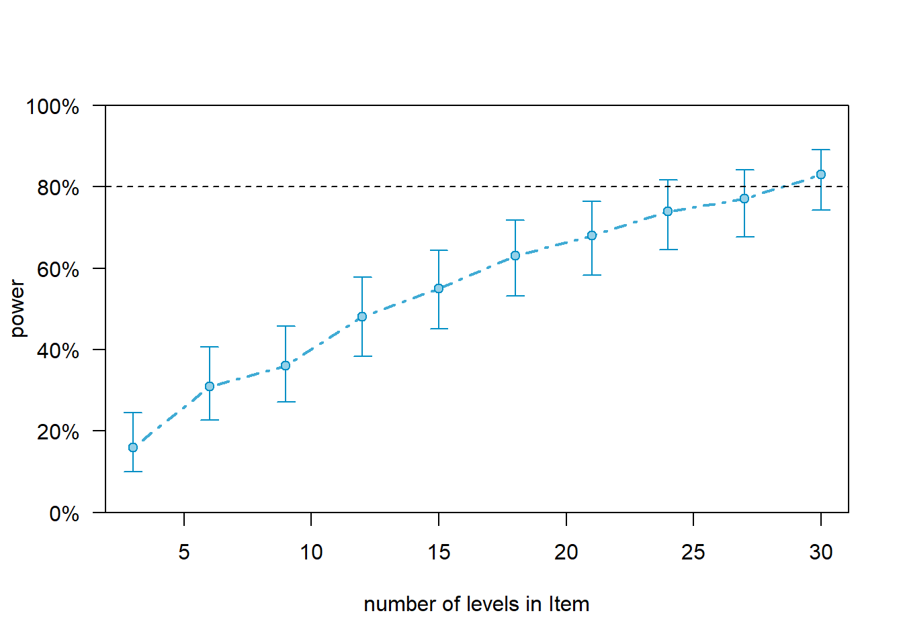
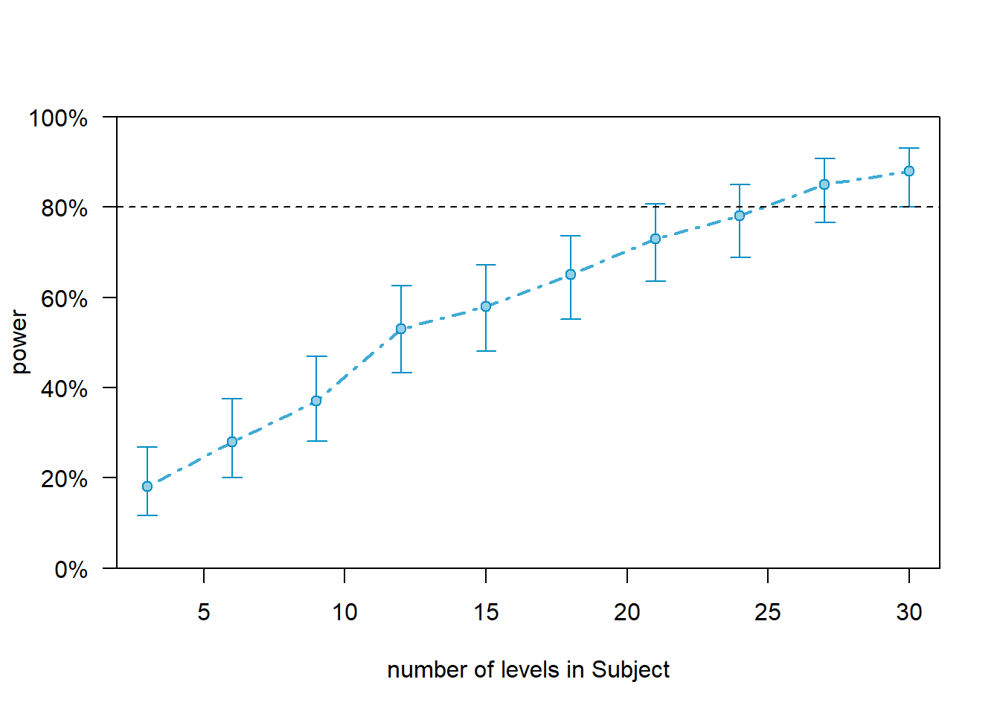
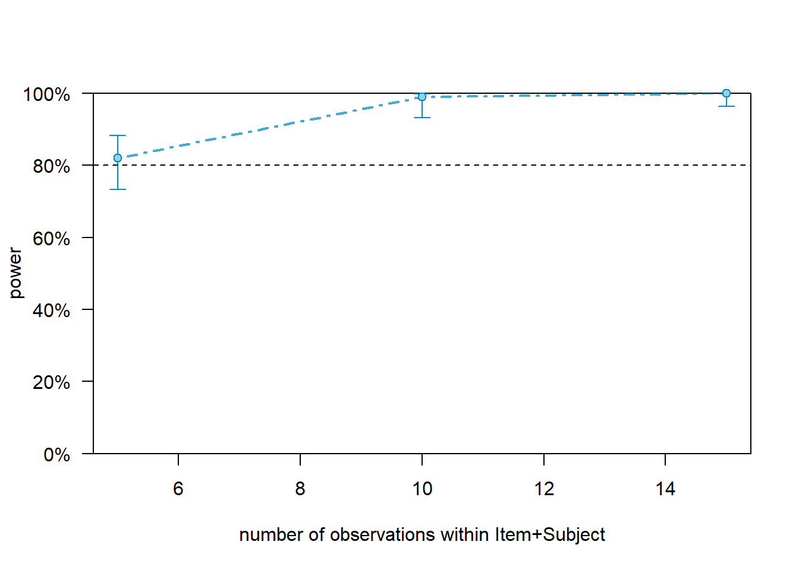

Power Analysis in R
Martin Schweinberger
2021-11-17

Introduction
This tutorial introduces power analysis using R. The entire R markdown document for this tutorial can be downloaded here. If you want to render the Rmarkdown notebook on your machine, i.e. knitting the document to a html or pdf file, you need to make sure that you have R installed and you also need to download the bibliography file and store it in the same folder where you store the Rmd file.
The basis for the present tutorial is Green and MacLeod (2016) (which you can find here). Green and MacLeod (2016) is a highly recommendable and thorough tutorial on performing power analysis in R. Recommendable literature on this topic are, e.g. Arnold et al. (2011) and Johnson et al. (2015) and this tutorial.
Power analysis is a method primarily used to determine the appropriate sample size for empirical studies.
The aim of this tutorial is to showcase how to perform power analyses for Mixed-Effects Regression Models using the lme4 package in R. The aim is not to provide a fully-fledged analysis but rather to show and exemplify a handy method to estimate power of experimental and observational designs and how to implement this in R.
NOTE
Power analysis have also been used post-hoc to test if the sample size of studies was sufficient to detect meaningful effects. However, such post-hoc power calculations where the target effect size comes from the data, give misleading results (Hoenig and Heisey 2001; Perugini, Gallucci, and Costantini 2018) and should thus be treated with extreme care!
What determines if you find an effect?
There are different factors that determine if a model finds an effect. The accuracy (i.e., the probability of finding an effect) depends on three main factors:
- the size of the effect (bigger effects are easier to detect)
- the variability of the effect (less variability makes it easier to detect an effect), and
- the sample size (the bigger the sample size, the easier it is to detect an effect);
- number of subjects/participants
- number of items/questions
- number of observations per item within subjects/participants
Now, if a) we dealing with a very big effect, then we need only few participants and few items to accurately find this effect.
Or b) if we dealing with an effect that has low variability (it is observable for all subjects with the same strength), then we need only few participants and few items to accurately find this effect.
Before we conduct a study, we should figure out, what sample we need to detect a small/medium effect with medium variability so that our model is sufficient to detect this kind of effect. In order to do this, we would generate a data set that mirrors the kind of data that we expect to get (with the properties that we expect to get). We can then fit a model to this data and check if a model would be able to detect the expected effect. However, because a single model does not tell us that much (ift could simply be luck that it happened to find the effect), we run many different models on variations of the data and see how many of them find the effect. As a general rule of thumb, we want a data set that allows a model to find a medium sized effect with at least an accuracy of 80 percent (Field et al. 2007).
In the following, we will go through how to determine what sample size we need for an example analysis.
Preparation and session set up
This tutorial is based on R. If you have not installed R or are new to it, you will find an introduction to and more information how to use R here. For this tutorials, we need to install certain packages into the R library on your computer so that the scripts shown below are executed without errors. Before turning to the code below, please install the packages by running the code below this paragraph. If you have already installed the packages mentioned below, then you can skip ahead and ignore this section. To install the necessary packages, simply run the following code - it may take some time (between 1 and 5 minutes to install all of the libraries so you do not need to worry if it takes some time).
# set options
options(stringsAsFactors = F) # no automatic data transformation
options("scipen" = 100, "digits" = 4) # suppress math annotation
# install libraries
install.packages(c("tidyverse", "lme4", "sjPlot", "simr"))Once you have installed R and RStudio and initiated the session by executing the code shown above, you are good to go.
Generating data
In order to perform a power analysis, we will start by loading the tidyverse package to process the data and by generating a data that we will use to determine the power of a regression model.
This simulated data set has
- 200 data points
- 2 Conditions (Control, Test)
- 10 Subjects
- 10 Items
# load package
library(tidyverse)
# generate data
simdat <- data.frame(
sub <- rep(paste0("Sub", 1:10), each = 20),
cond <- rep(c(
rep("Control", 10),
rep("Test", 10))
, 10),
itm <- as.character(rep(1:10, 20))
) %>%
dplyr::rename(Subject = 1,
Condition = 2,
Item = 3) %>%
dplyr::mutate_if(is.character, factor)| Subject | Condition | Item |
|---|---|---|
| Sub1 | Control | 1 |
| Sub1 | Control | 2 |
| Sub1 | Control | 3 |
| Sub1 | Control | 4 |
| Sub1 | Control | 5 |
| Sub1 | Control | 6 |
| Sub1 | Control | 7 |
| Sub1 | Control | 8 |
| Sub1 | Control | 9 |
| Sub1 | Control | 10 |
| Sub1 | Test | 1 |
| Sub1 | Test | 2 |
| Sub1 | Test | 3 |
| Sub1 | Test | 4 |
| Sub1 | Test | 5 |
We add a dependent variable (AOI) which represents the dependent variable in the study. In our case, we determine that Condition has a relatively weak effect (the probability of gazing into the area of interest (AOI) is .7 in the test condition compared to .5 in the control condition). In addition, this effect is only present in half of the subjects to reflect the variability in the effect.
simdat <- simdat %>%
dplyr::arrange(Condition) %>%
dplyr::mutate(
dep <- c(sample(c("AOI", "NotAOI"), 50, replace = T, prob = c(.5, .5)),
sample(c("AOI", "NotAOI"), 50, replace = T, prob = c(.5, .5)),
sample(c("AOI", "NotAOI"), 50, replace = T, prob = c(.5, .5)),
sample(c("AOI", "NotAOI"), 50, replace = T, prob = c(.7, .3)))
) %>%
dplyr::mutate_if(is.character, factor) %>%
dplyr::rename(AOI = 4)The data looks like this.
1 Post-Hoc Power Analysis
Now that we have generated some data, we will fit a model to it and perform a power analysis on the observed effects.
NOTE
Post-hoc power calculations (where the target effect size comes from the data) give misleading results (Hoenig and Heisey 2001, @perugini2018practical) and should thus be treated with extreme care!
We will fit a first model to the data. Thus, in a first step, we load the lme4 package to create a model, set a seed (to save the results and so that the results can be replicated), and then create an initial mixed-effects model.
# load package
library(lme4)
# set seed for replicability
set.seed(12345)
# fit model
m1 <- glmer(AOI ~ (1|Subject) +(1|Item) + Condition, family="binomial", data=simdat)
# inspect results
summary(m1)## Generalized linear mixed model fit by maximum likelihood (Laplace
## Approximation) [glmerMod]
## Family: binomial ( logit )
## Formula: AOI ~ (1 | Subject) + (1 | Item) + Condition
## Data: simdat
##
## AIC BIC logLik deviance df.resid
## 271.1 284.3 -131.5 263.1 196
##
## Scaled residuals:
## Min 1Q Median 3Q Max
## -1.3821 -0.8518 -0.6110 0.9643 1.8076
##
## Random effects:
## Groups Name Variance Std.Dev.
## Subject (Intercept) 1.753e-01 4.187e-01
## Item (Intercept) 6.267e-10 2.503e-05
## Number of obs: 200, groups: Subject, 10; Item, 10
##
## Fixed effects:
## Estimate Std. Error z value Pr(>|z|)
## (Intercept) 0.1257 0.2438 0.516 0.60603
## ConditionTest -0.8631 0.2997 -2.880 0.00398 **
## ---
## Signif. codes: 0 '***' 0.001 '**' 0.01 '*' 0.05 '.' 0.1 ' ' 1
##
## Correlation of Fixed Effects:
## (Intr)
## ConditinTst -0.575
## optimizer (Nelder_Mead) convergence code: 0 (OK)
## boundary (singular) fit: see ?isSingularWe now check the effect sizes of the predictors in the model. We can do this by displaying the results of the model using the tab_model function from the sjPlot package.
# load package
library(sjPlot)
# tabulate results
sjPlot::tab_model(m1)| AOI | |||
|---|---|---|---|
| Predictors | Odds Ratios | CI | p |
| (Intercept) | 1.13 | 0.70 – 1.83 | 0.606 |
| Condition [Test] | 0.42 | 0.23 – 0.76 | 0.004 |
| Random Effects | |||
| σ2 | 3.29 | ||
| τ00 Subject | 0.18 | ||
| τ00 Item | 0.00 | ||
| ICC | 0.05 | ||
| N Subject | 10 | ||
| N Item | 10 | ||
| Observations | 200 | ||
| Marginal R2 / Conditional R2 | 0.051 / 0.099 | ||
Now, we perform power analysis on an observed effect. This analysis tells us how likely the model is to find an observed effect given the data.
NOTE
We use a very low number of simulations (100) and we use the default z-test which is suboptimal for small samples (Bolker et al. 2009). In a proper study, you should increase the number of simulations (to at least 1000) and you should use a bootstrapping rather than a z-test (cf. Halekoh, Højsgaard, and others 2014).
# load package
library(simr)
# set seed for replicability
set.seed(12345)
# perform power analysis for present model
rsim0 <- powerSim(m1, fixed("ConditionTest", "z"), nsim=100)Now we can inspect the results.
# inspect results
rsim0## Power for predictor 'ConditionTest', (95% confidence interval):
## 91.00% (83.60, 95.80)
##
## Test: z-test
## Effect size for ConditionTest is -0.86
##
## Based on 100 simulations, (1 warning, 0 errors)
## alpha = 0.05, nrow = 200
##
## Time elapsed: 0 h 0 m 23 s
##
## nb: result might be an observed power calculationThe results of the power analysis show that, given the data at hand, the model would have detected the effect of Conidition:Test with a probability of 91 percent. However, and as stated above, the results of such post-hoc power calculations (where the target effect size comes from the data) give misleading results (Hoenig and Heisey (2001)) and should thus be treated with extreme care!
2 Power Analysis of Set Effects
While the effect of Condidition:Test is rather small (given the small number of subjects and items, the small effect size, and the variability in the effect and we would thus not be surprised that out model is not very accurate in detecting this effect), the target accuracy of finding an effect that one is interested in is commonly 80 percent (see Field, Miles, and Field (2012), Green and MacLeod (2016)). The accuracy (i.e., the probability of finding an effect) depends on three main factors:
- the size of the effect (bigger effects are easier to detect)
- the variability of the effect (less variability makes it easier to detect an effect), and
- the sample size (the bigger the sample size, the easier it is to detect an effect);
- number of subjects/participants
- number of items/questions
- number of observations per item within subjects/participants
We will now check if the sample size is sufficient to detect a small effect (Cohen’s d 0.2). According to Chen, Cohen, and Chen (2010) odds ratios of 1.68, 3.47, and 6.71 are equivalent to Cohen’s d = 0.2 (small), 0.5 (medium), and 0.8 (large) - the traditional scale is 0.2 for a small, 0.5 for medium sized, and 0.8 for a large or strong effect. We need to determine the odds ratios of the fixed effects and then convert them into Cohen’s d values for which we have associations between traditional denominations (small, medium, and large) and effect sife values.
estimatesfixedeffects <- fixef(m1)
exp(estimatesfixedeffects)## (Intercept) ConditionTest
## 1.1339806 0.4218695We can see that the effect is rather small which makes it very hard to detect an effect. We will now change the size of the effect of ConditionTest to represent a truly small effect, i.e. on the brink of being noise but being just strong enough to be considered small. In other words, we will set the effect so that its odds ratio is exactly 1.68.
# set seed for replicability
set.seed(12345)
# perform power analysis for small effect
fixef(m1)["ConditionTest"] <- 0.519
estimatesfixedeffects <- fixef(m1)
exp(estimatesfixedeffects)## (Intercept) ConditionTest
## 1.133981 1.680346Now we can test if the sample size of the model is sufficient to find a small effect.
# set seed for replicability
set.seed(12345)
# perform power analysis for present model
rsim1 <- powerSim(m1, fixed("ConditionTest", "z"), nsim=100)The results are shown below.
# show results
rsim1## Power for predictor 'ConditionTest', (95% confidence interval):
## 41.00% (31.26, 51.29)
##
## Test: z-test
## Effect size for ConditionTest is 0.52
##
## Based on 100 simulations, (0 warnings, 0 errors)
## alpha = 0.05, nrow = 200
##
## Time elapsed: 0 h 0 m 24 sThe power analysis shows that the data is sufficient to detect a small effect for Condition:Test with 41 percent accuracy.
3 Power Analysis of Extended Data
We will now extend the data to see what sample size is needed to get to the 80 percent accuracy threshold. We begin by increasing the number of items from 10 to 30 to see if this would lead to a sufficient sample size.
# increase sample size
m2 <- extend(m1, along="Item", n=30)
# perform power simulation
rsim2 <- powerSim(m2, fixed("ConditionTest", "z"), nsim=100)The results are shown below.
# show results
rsim2## Power for predictor 'ConditionTest', (95% confidence interval):
## 82.00% (73.05, 88.97)
##
## Test: z-test
## Effect size for ConditionTest is 0.52
##
## Based on 100 simulations, (0 warnings, 0 errors)
## alpha = 0.05, nrow = 600
##
## Time elapsed: 0 h 0 m 37 sBy increasing the number of items to 30, we would now be able to detect a small effect (d=.2) with an accuracy of 82 percent. This means that we would have to add more items as 30 is not yet sufficient.
4 Power Analysis for Ranges
We can also check the accuracy for a range of values as shown below. We begin by extending the number of Items.
pc2 <- powerCurve(m2, fixed("ConditionTest", "z"), along = "Item", nsim=100)The results are shown below.
# show results
print(pc2)## Power for predictor 'ConditionTest', (95% confidence interval),
## by number of levels in Item:
## 3: 16.00% ( 9.43, 24.68) - 60 rows
## 6: 31.00% (22.13, 41.03) - 120 rows
## 9: 36.00% (26.64, 46.21) - 180 rows
## 12: 48.00% (37.90, 58.22) - 240 rows
## 15: 55.00% (44.73, 64.97) - 300 rows
## 18: 63.00% (52.76, 72.44) - 360 rows
## 21: 68.00% (57.92, 76.98) - 420 rows
## 24: 74.00% (64.27, 82.26) - 480 rows
## 27: 77.00% (67.51, 84.83) - 540 rows
## 30: 83.00% (74.18, 89.77) - 600 rows
##
## Time elapsed: 0 h 3 m 50 sIn addition, we can plot the results as follows:
plot(pc2)
Instead of increasing the number of Items, we could also increase the number of Subjects. So below, we test check the accuracy for up to 30 subjects.
m3 <- extend(m1, along="Subject", n=30)
# perform power calculation
pc3 <- powerCurve(m3, fixed("ConditionTest", "z"), along="Subject", nsim=100)The results are shown below.
# print results
print(pc3)## Power for predictor 'ConditionTest', (95% confidence interval),
## by number of levels in Subject:
## 3: 13.00% ( 7.11, 21.20) - 60 rows
## 6: 21.00% (13.49, 30.29) - 120 rows
## 9: 35.00% (25.73, 45.18) - 180 rows
## 12: 46.00% (35.98, 56.26) - 240 rows
## 15: 51.00% (40.80, 61.14) - 300 rows
## 18: 61.00% (50.73, 70.60) - 360 rows
## 21: 68.00% (57.92, 76.98) - 420 rows
## 24: 76.00% (66.43, 83.98) - 480 rows
## 27: 82.00% (73.05, 88.97) - 540 rows
## 30: 82.00% (73.05, 88.97) - 600 rows
##
## Time elapsed: 0 h 3 m 25 sAgain, we can also visualize the results.
# visualize results
plot(pc3) 
The results show that we breach the 80 percent threshold with 30 subjects.
Finally, it may be an option to increase the number of data points within subjects and items (while the number of items and subjects remain constant).
m4 <- extend(m1, within="Item+Subject", n=15)
# perform power calculation
pc4 <- powerCurve(m4, fixed("ConditionTest", "z"), within="Item+Subject", breaks=c(5, 10, 15), nsim=100)The results are shown below.
# show results
print(pc4)## Power for predictor 'ConditionTest', (95% confidence interval),
## by number of observations within Item+Subject:
## 5: 81.00% (71.93, 88.16) - 500 rows
## 10: 99.00% (94.55, 99.97) - 1000 rows
## 15: 100.0% (96.38, 100.0) - 1500 rows
##
## Time elapsed: 0 h 2 m 19 s# show results
plot(pc4)
The results show that we would have a sufficient data set if we had 14 observations per Subject in each Item because with 10 observations, the accuracy breaches the 80 percent level.
Citation & Session Info
Schweinberger, Martin. 2021. Power Analysis in R. Brisbane: The University of Queensland. url: https://slcladal.github.io/pwr.html (Version 2021.11.17).
@manual{schweinberger2021pwr,
author = {Schweinberger, Martin},
title = {Power Analysis in R},
note = {https://slcladal.github.io/pwr.html},
year = {2021},
organization = "The University of Queensland, Australia. School of Languages and Cultures},
address = {Brisbane},
edition = {2021.11.17}
}sessionInfo()## R version 4.1.1 (2021-08-10)
## Platform: x86_64-w64-mingw32/x64 (64-bit)
## Running under: Windows 10 x64 (build 19043)
##
## Matrix products: default
##
## locale:
## [1] LC_COLLATE=German_Germany.1252 LC_CTYPE=German_Germany.1252
## [3] LC_MONETARY=German_Germany.1252 LC_NUMERIC=C
## [5] LC_TIME=German_Germany.1252
##
## attached base packages:
## [1] stats graphics grDevices utils datasets methods base
##
## other attached packages:
## [1] simr_1.0.5 sjPlot_2.8.9 lme4_1.1-27.1 Matrix_1.3-4
## [5] forcats_0.5.1 stringr_1.4.0 dplyr_1.0.7 purrr_0.3.4
## [9] readr_2.0.2 tidyr_1.1.4 tibble_3.1.5 ggplot2_3.3.5
## [13] tidyverse_1.3.1 flextable_0.6.9 knitr_1.36 DT_0.19
##
## loaded via a namespace (and not attached):
## [1] TH.data_1.1-0 minqa_1.2.4 colorspace_2.0-2 rio_0.5.27
## [5] ellipsis_0.3.2 sjlabelled_1.1.8 estimability_1.3 parameters_0.15.0
## [9] base64enc_0.1-3 fs_1.5.0 rstudioapi_0.13 fansi_0.5.0
## [13] mvtnorm_1.1-3 lubridate_1.8.0 xml2_1.3.2 codetools_0.2-18
## [17] splines_4.1.1 sjmisc_2.8.7 jsonlite_1.7.2 nloptr_1.2.2.2
## [21] ggeffects_1.1.1 pbkrtest_0.5.1 binom_1.1-1 broom_0.7.10
## [25] dbplyr_2.1.1 effectsize_0.5 compiler_4.1.1 httr_1.4.2
## [29] sjstats_0.18.1 emmeans_1.7.0 backports_1.3.0 assertthat_0.2.1
## [33] fastmap_1.1.0 cli_3.1.0 htmltools_0.5.2 tools_4.1.1
## [37] coda_0.19-4 gtable_0.3.0 glue_1.4.2 Rcpp_1.0.7
## [41] carData_3.0-4 cellranger_1.1.0 jquerylib_0.1.4 vctrs_0.3.8
## [45] svglite_2.0.0 nlme_3.1-152 iterators_1.0.13 crosstalk_1.1.1
## [49] insight_0.14.5 xfun_0.26 openxlsx_4.2.4 rvest_1.0.2
## [53] lifecycle_1.0.1 MASS_7.3-54 zoo_1.8-9 scales_1.1.1
## [57] hms_1.1.1 parallel_4.1.1 sandwich_3.0-1 curl_4.3.2
## [61] yaml_2.2.1 gdtools_0.2.3 stringi_1.7.5 highr_0.9
## [65] bayestestR_0.11.5 plotrix_3.8-2 boot_1.3-28 zip_2.2.0
## [69] rlang_0.4.12 pkgconfig_2.0.3 systemfonts_1.0.3 evaluate_0.14
## [73] lattice_0.20-44 htmlwidgets_1.5.4 tidyselect_1.1.1 plyr_1.8.6
## [77] magrittr_2.0.1 R6_2.5.1 generics_0.1.1 multcomp_1.4-17
## [81] RLRsim_3.1-6 DBI_1.1.1 foreign_0.8-81 mgcv_1.8-36
## [85] pillar_1.6.4 haven_2.4.3 withr_2.4.2 abind_1.4-5
## [89] survival_3.2-11 datawizard_0.2.1 performance_0.8.0 car_3.0-11
## [93] modelr_0.1.8 crayon_1.4.2 uuid_1.0-2 utf8_1.2.2
## [97] tzdb_0.2.0 rmarkdown_2.5 officer_0.4.0 grid_4.1.1
## [101] readxl_1.3.1 data.table_1.14.2 reprex_2.0.1.9000 digest_0.6.28
## [105] webshot_0.5.2 xtable_1.8-4 munsell_0.5.0 viridisLite_0.4.0
## [109] kableExtra_1.3.4References
Arnold, Benjamin F, Daniel R Hogan, John M Colford, and Alan E Hubbard. 2011. “Simulation Methods to Estimate Design Power: An Overview for Applied Research.” BMC Medical Research Methodology 11 (1): 1–10.
Bolker, Benjamin M, Mollie E Brooks, Connie J Clark, Shane W Geange, John R Poulsen, M Henry H Stevens, and Jada-Simone S White. 2009. “Generalized Linear Mixed Models: A Practical Guide for Ecology and Evolution.” Trends in Ecology & Evolution 24 (3): 127–35.
Chen, Henian, Patricia Cohen, and Sophie Chen. 2010. “How Big Is a Big Odds Ratio? Interpreting the Magnitudes of Odds Ratios in Epidemiological Studies.” Communications in Statistics–Simulation and Computation 39 (4): 860–64.
Field, Andy, Jeremy Miles, and Zoe Field. 2012. Discovering Statistics Using R. Sage.
Field, Scott A, Patrick J O’Connor, Andrew J Tyre, and Hugh P Possingham. 2007. “Making Monitoring Meaningful.” Austral Ecology 32 (5): 485–91.
Green, Peter, and Catriona J MacLeod. 2016. “SIMR: An R Package for Power Analysis of Generalized Linear Mixed Models by Simulation.” Methods in Ecology and Evolution 7 (4): 493–98.
Halekoh, Ulrich, Søren Højsgaard, and others. 2014. “A Kenward-Roger Approximation and Parametric Bootstrap Methods for Tests in Linear Mixed Models–the R Package Pbkrtest.” Journal of Statistical Software 59 (9): 1–30.
Hoenig, John M, and Dennis M Heisey. 2001. “The Abuse of Power: The Pervasive Fallacy of Power Calculations for Data Analysis.” The American Statistician 55 (1): 19–24.
Johnson, Paul CD, Sarah JE Barry, Heather M Ferguson, and Pie Müller. 2015. “Power Analysis for Generalized Linear Mixed Models in Ecology and Evolution.” Methods in Ecology and Evolution 6 (2): 133–42.
Perugini, Marco, Marcello Gallucci, and Giulio Costantini. 2018. “A Practical Primer to Power Analysis for Simple Experimental Designs.” International Review of Social Psychology 31 (1): 1–23.